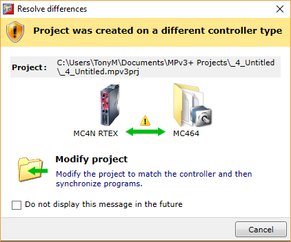

Firstly a physical connection needs to be made between the PC and the controller. Normally this will be an Ethernet connection, either directly or over a network. Other types of connection are available for special purposes (such as firmware loading) or for direct connections to older controllers.
When Motion Perfect is first run it will go through more stages to make a connection as it normally remembers previous connection settings. See “ Initial Connection ” for details.
Connecting Motion Perfect to a controller is normally a two stage process:
Motion Perfect remembers the settings for its last connection and uses these as defaults for the next connection.
To specify the communications parameters select “ Controller / Connection Settings” from Motion Perfect’s main menu or click on the connection settings indicator in the status bar.
This will open the “ Connection dialog ”. The appearance of the dialog is different depending on which interface has been selected.
First select the interface required and then the parameters.
To make a connection to a controller select an operating mode other than “Disconnected” from the “Controller” entry in the main menu or from the mode selector at the right end of the status bar at the bottom of the Motion Perfect main window.
Closing the dialog with “Apply” will update the current connection communication parameters. Closing it with “Apply and Connect” will update the current communications parameters and connect to the controller using the last used connection operating mode.
Select an operating mode from the “ Controller ” section of the main menu or from the mode indicator in the status bar.
Motion Perfect will then try to connect to the controller using the selected operating mode and the previously selected communications parameters.
If “Sync mode” was selected Motion Perfect will try and synchronize the contents of the controller with the last used project. If the controller model is the same as the previously connected controller the project is automatically selected, if the controller model is different a dialog is displayed to allow the user to choose between modifying the project and cancelling the connect operation.

If the user cancels then connection in “Tool Mode” is attempted.
After cancelling the user can select a suitable option from the “ Project ” section of the main menu as needed.